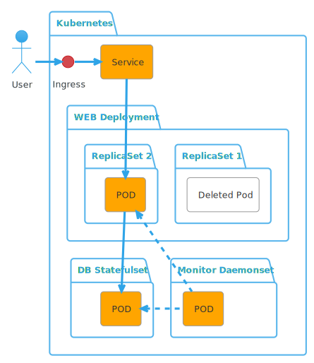

Castilla-La Mancha University
UCLM
Kubernetes Crash Course
MCSI 2023-2024
About me
- Miguel Ángel García
- https://magmax.org
- @magmax9
- miguelangel.garcia AT gmail DOT com
- Senior Security Engineer at Splashthat
About this presentation
- Available at https://magmax.org/uclm-mcsi-acyds-2023-2024/K8s.html#/
- Printable version: https://magmax.org/uclm-mcsi-acyds-2023-2024/K8s.html?print-pdf#/
- LICENSE: CC BY-NC-SA
- Pull-requests are welcome at https://github.com/magmax/uclm-mcsi-acyds-2023-2024/
What is Kubernetes (K8s) about?
- Deployments
- Distributed
- Availability
- Repeteability
- Extensibility
Based on Resources
- Everything is a resource
- Every resource can be mapped to YAML or JSON
- It is possible to create new resource types.
Base computing resource: POD
- A POD can contain one or more containers.
- A POD can expose ports to the kubernetes network
- A POD is not accessible outside of kubernetes network by itself
- A POD name contains a random part
- A POD has a random IP Address
Base case: a web server
Resources: Ingress
- Allows to expose something outside Kubernetes
- Is managed by the Ingress controller, such as nginx, traefic, envoy, ...
- The ingress controller is a POD as well (not in the diagram)
Resources: Service
- Is not a POD.
- Allows to give a fixed name to a POD and has a fixed IP.
- Uses RoundRobin to reach each related POD (named "endpoint").
Resources: Deployment
- Is not a POD
- Manages ReplicaSets
- Allows Rollbacks
Resources: ReplicaSets
- Is not a POD
- Allows Rollbacks
- Ensures the required number of PODs are ready
Resources: StatefulSets
- Is not a POD
- Ensures the ordered creation and destruction of PODs
- Usually pods will have a fixed name
Resources: Daemonsets
- Is not a POD
- Ensures there is a POD per Node
Resources: POD
- Minimum computation unit (Atom)
- Contains one or more containers
- Initialization containers can finish
- If any non-init container finished, the pod is destroyed.
- Ephemeral
- Ideally, ReadOnly
- Follow the lifecycle.
POD Lifecycle
- Pending: Searching for resources (node, image, ...)
- Running: Doing its job
- Succeeded: Finished correctly
- Failed: Finished with errors
- Unknown: There is no communication with the node containing the POD.
Other resources
- Cronjobs, jobs: handle PODs that are expected to finish
- Volumes,PVPVC, ...: Handle persistence>
- ConfigMaps,Secrets: Handle configuration
- RoleclusterRoleRoleBindingClusterRoleBinding: Handle RBAC
- CRD: Extensible endpoint to create your own resources
Questions?
Contact
- miguelangel.garcia AT gmail DOT com
- https://magmax.org/uclm-mcsi-2023-2024
- https://github.com/magmax/uclm-mcsi-2023-2024